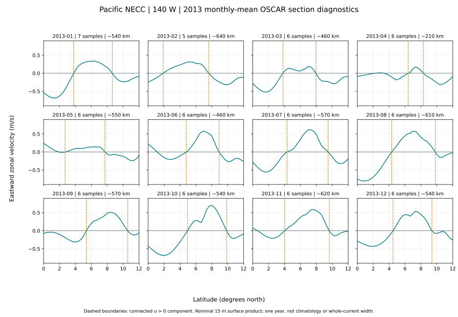

Pacific NECC · saved surface-product diagnostic
2013 monthly sections at 140°W
Twelve monthly mean profiles from 72 archived OSCAR samples. Dashed lines locate the first zero crossing on each side of the largest eligible eastward peak in 2–10°N.
These are widths of connected positive-flow components in monthly mean zonal velocity. They are not whole-current dimensions, a multiyear climatology or averages of instantaneous widths. The nominal 15 m product coordinate does not make this a direct instrument section at that depth.

Monthly diagnostic inventory
Loading saved monthly calculations…
| Month | Samples | South boundary °N | North boundary °N | Approximate span | Threshold sensitivity |
|---|
Monthly means weight each archived timestamp equally. Only the component containing the selected peak is included; westward gaps separate other components. The 0.05 and 0.1 m/s alternatives change the boundary definition and are not uncertainty bounds. Product error, smoothing and coarse sampling remain unresolved.
Source and calculation
Calculation records and brackets · Source inventory and timestamps · Measurement rules · NOAA archive metadata
ESR OSCAR third-degree product version 2017.0, mirrored by NOAA PIFSC. This calculation uses one section and one year. Hsin and Qiu (2012) used a different grid and 1992–2010 period; these profiles do not reproduce their climatology.